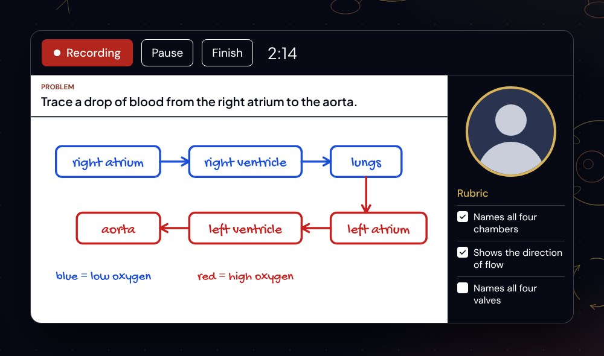

Active learning · Medical & Health Science Faculty
Coaching and classroom tools for faculty who teach actively.
Build your course with an expert beside you, or pick up a tool your students can use this week.
Tools for your classroom
Ready to use with your students this week.

01
chalkcast
$59 a year per instructor
A whiteboard recording studio for graded teaching assignments. Students draw, explain their reasoning on camera, and turn in a video you can grade. No student accounts, and nothing is stored.
02
More tools are on the way
Each tool starts in my own anatomy and physiology classes before it is offered here.
Coaching · Team-Based Learning
Build a deployable TBL component in 90 minutes. The piece you actually need today.
Team-Based Learning replaces passive lecture with structured team problem-solving and peer accountability. Project Lab sessions pair you with a TBL expert and an AI hub tool. Bring your content. Leave with a deployable, accessible, Canvas-ready artifact.
Where the work breaks down
You weren't trained in this. You don't have to invent it alone.
01
40 hours per module.
Building one solid active learning opportunity can take 30 to 40 hours. The next one starts close to scratch. Materials never quite compound.
02
Prompting is a skill.
Faculty are told to use AI without being shown how. Outputs come back generic, inaccessible, or pedagogically thin. The work piles up.
03
No system, no peers.
Most active learning gets built in isolation. No peer review, no shared templates, no faculty community. Every educator reinvents the wheel.
How the build works
From your content to your classroom in 90 minutes.
01
Bring your content.
Your course learning objectives plus links to your study guide, lecture, or syllabus. No prep beyond that.
02
Refine the inputs together.
The hub tool's intake plus expert coaching sharpens objectives, audience, and pedagogical fit.
03
AI does the heavy lifting.
The tool generates the prompt; AI builds the first draft. You stay in command of tone and depth.
04
Review, refine, and ship.
Live coaching shapes the final artifact. Leave with HTML, the accessible companion doc, and Canvas-ready embed code.
Coaching · Three ways in
Start with a session. Stay for a system.
01
Project Lab
$147 first / $87 alumni
Build one active learning artifact in 90 minutes. Expert coaching plus an AI hub tool that handles the build.
Includes
- 90-minute live session
- Generated HTML + accessible doc
- Canvas-ready embed
- Your content, your branding
Recommended
02
Project Sprint
$1,995 · 30 days
Build a complete TBL module in 30 days with weekly coaching and a cohort that holds you to it.
Includes
- 4 weekly group coaching calls
- Complete module build
- Faculty cohort + peer review
- Template library + checklist
Best value
03
Annual Member
$5,995 · academic year
Ten-month academic-year membership for faculty consistently shipping quality modules across their full course.
Includes
- 10 monthly build cycles
- Unlimited office hours
- Complete course pathway
- Priority community access
Need a custom 90-minute intensive? Book a 1:1 →
About Sharilyn
Twenty years at the bedside. A decade in classrooms. One method.

I'm Sharilyn Rennie, ND, a physician-trained educator. My clinical background is in bedside military medicine, with a short period of practice in functional medicine. For over ten years, I've taught anatomy, physiology, and the medical sciences across California community colleges and graduate health-science programs. I also build the classroom tools I use with my own students, and I share them here.
Student success starts with faculty.
Why this works
TBL is the most-studied active learning method in medical education.
Peer-reviewed studies show meaningful gains in exam performance, knowledge acquisition, and engagement across the health sciences.
01 · Board exam performance
NBME subject exam scores in TBL anatomy were significantly higher than in lecture-based preclinical courses, with progressive gains over five years of data.
Vasan, DeFouw & Compton · 2011
Anatomical Sciences Education
Anatomical Sciences Education
02 · Across the literature
Systematic review across PubMed, SCOPUS, ERIC, and Cochrane found significant improvement in exam performance and significant superiority to control groups.
Chytas et al. · 2023
Morphologie
Morphologie
03 · Engagement & learning
Students reported 91.5% knowledge acquisition, 89.1% peer learning, and 87.2% content engagement in team-based clinical scenarios.
Al-Badri, Davila & Castorina · 2025
Anatomical Sciences Education
Anatomical Sciences Education
04 · Across the health sciences
Statistically significant satisfaction across MBBS, Nursing, Pharm D, and Medical Laboratory Sciences programs (mean ratings 4.1 to 4.9 on a 5-point scale).
Al-Neklawy & Ismail · 2021
Clinical Anatomy
Clinical Anatomy
Faculty questions
What faculty want to know upfront.
Will this work with my Canvas LMS?
+
Yes. Every artifact embeds in Canvas via iframe and is tested against Canvas's default Content Security Policy. If your institution's IT has locked down external iframes, you receive the source files to host on your own infrastructure. The accessible companion document drops directly into Canvas Pages.
Do I have to redesign my whole course, or can I add TBL to a class I've already built?
+
No, you don't have to redesign anything. Most faculty start by adding one TBL module to a course they've already built, often replacing a single lecture or unit. Project Lab is designed for incremental adoption: build one module, test it with students, then decide whether to expand. Everything else in your course stays exactly as it is.
What exactly do I receive after a Project Lab session?
+
Three things: a deployable interactive HTML artifact with a live URL ready for Canvas, an accessible companion document, and the underlying source files. You walk out of the 90-minute session with a working component, not a draft. Combine multiple Lab components over the semester, or move to Project Sprint to integrate them all into a complete TBL module across 30 days.
Is the output accessible? WCAG 2.2 and Section 508?
+
We design every artifact to meet WCAG 2.2 and Section 508 standards. The interactive artifact uses semantic HTML, color contrast, keyboard navigation, and alt-text. Every deliverable includes a companion document with full text content and screen-reader-friendly structure. We do not certify formal compliance, since institutional accessibility standards and audit processes vary. If your institution's accessibility review identifies issues, we will revise the artifact at no additional cost or provide an alternative deliverable that meets your institutional requirements.
Do I need any technical skills?
+
None. You don't touch code, GitHub, or any AI prompt directly. You bring your content and learning objectives. We build the artifact during the live session, you review and refine it, then we publish to a live URL ready for Canvas.
Who owns what I create?
+
You do. Every artifact you build belongs to you. Your content, your learning objectives, your final say on edits. You can use it across courses, share it with your department, or include it in your accreditation portfolio.
How is this different from using ChatGPT myself?
+
Two things. First, TBL methodology is built into how each artifact is structured: readiness assurance, application exercises, and peer accountability are designed into the output rather than bolted on. Second, you're not prompting alone. You're working alongside someone who knows both the pedagogy and the tooling, so the result is a defensible TBL artifact, not a generic worksheet.
Do I need coaching to use the tools?
+
No. Tools like chalkcast work on their own. You set up an assignment, share a link, and your students use it. Coaching is there when you want help building the rest of your course.
Founding cohort
Start with the primer. Stay for the first cohort.
Five short emails on TBL fundamentals, plus a free Course Branding Tool on Day 1 and first access to the founding Project Lab cohort.
01 · Founding price
Pay alumni rate ($87 vs $147) from day one. That pricing is locked in permanently.
02 · A voice in the roadmap
Help choose which Project Labs come next: Essay & Long-Answer Grading, Concept Lecture Video Player, Application Exercise Builder, Readiness Assurance Engine.
03 · Personal review
One-on-one feedback from Sharilyn on your first deployed module.
Five emails over eight days. Unsubscribe with one click. We never sell your email.